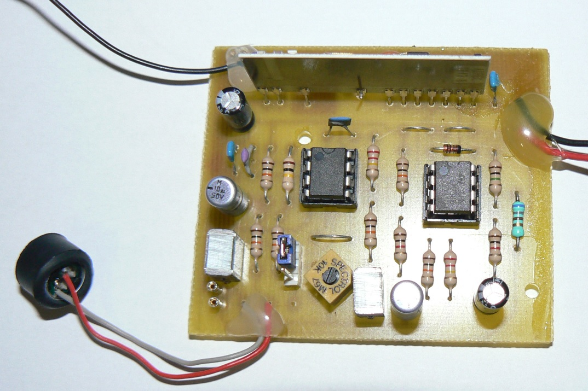

Catégorie C :
Certains dispositifs d’écoute artisanaux peuvent être fabriqués (ex. : petit émetteur audio FM ou émetteur vidéo). On trouve d’ailleurs de nombreux schémas sur Internet. Un technicien peut facilement réaliser ce type d’émetteur, mais ils sont souvent de grande taille, non chiffrés et facilement détectables.
Malgré cette facilité de fabrication, ils peuvent être redoutables s’ils sont bien dissimulés ; de plus, il n’en reste aucune trace d’achat.
(ex. : mini-émetteur FM fait maison) fig. 06 – source : ETSF
